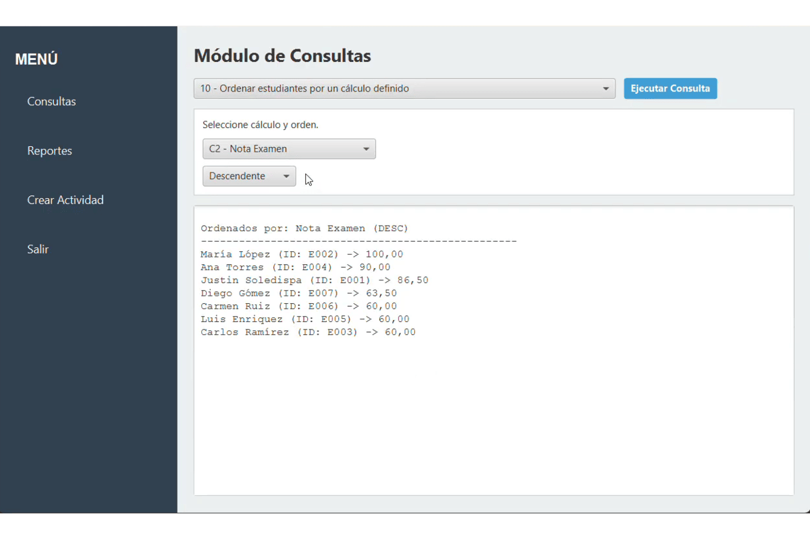

Finalizado
Blackboard
Sistema académico en Java para gestionar estudiantes, actividades, entregas, cálculos de calificaciones, consultas y reportes exportables en TXT o CSV.
Mi aporte: implementación de pilas para las calificaciones y menú de consultas en terminal.
- Lista compuesta
- Pila
- CSV/TXT
- JavaFX